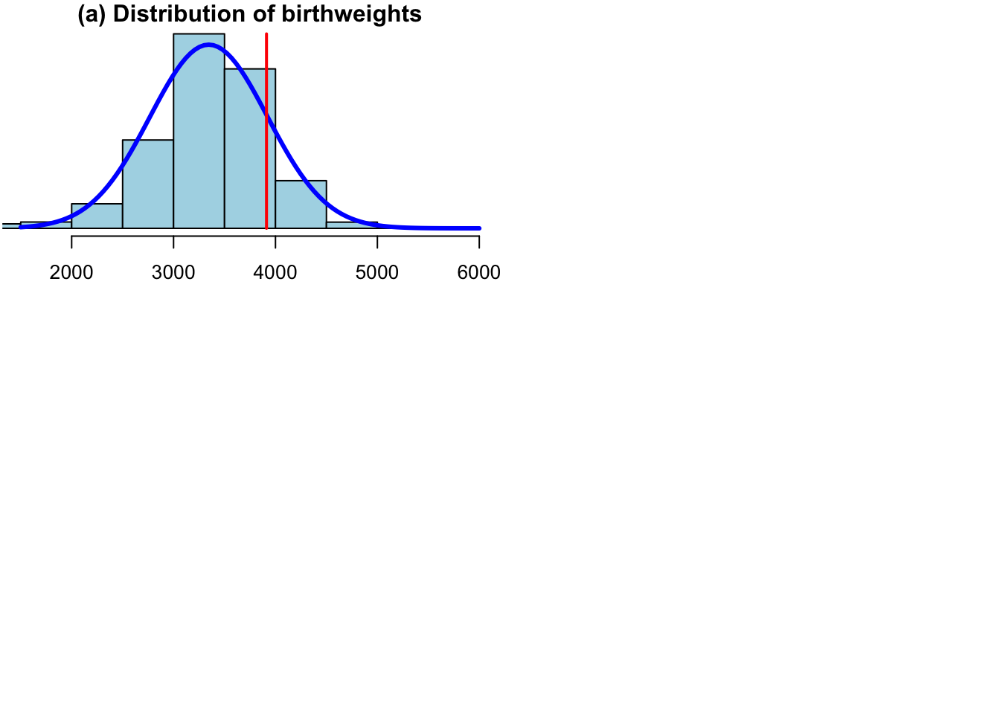
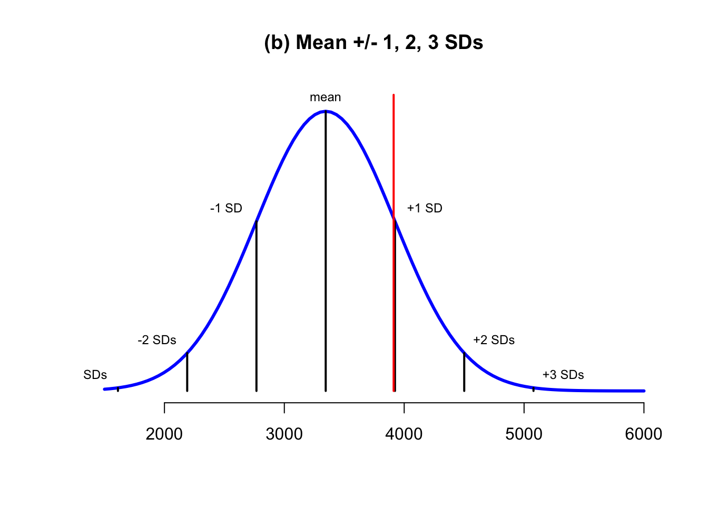
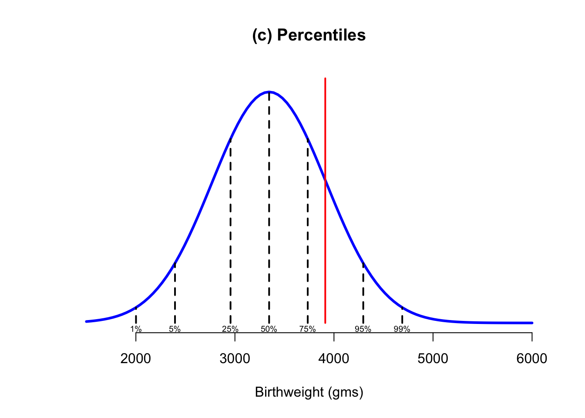

Chapter 3 The Normal Distribution
This chapter supplements the content in Lecture 3.
3.1 A Simple Demonstration of the Normal Distribution
First, let’s consider the ‘empirical distribution’, which is the pattern your data set makes.
Let’s consider UK births in 2020 for our example, since they’re a subject close to my heart (my first child was born in 2020).
Looking online, one can pull down the distribution of UK birthweights in 2020, available from the UK ONS website, and which are reported in 500g ‘bins’.
We can use these numbers to create a chart
(please note, the code I use for the demonstrations in this lesson is mostly modified from David Spiegelhalter’s originals, available on his Github page, with some of my own bits and bobs and new data…)
Spiegelhalter’s Github can be found here: https://github.com/dspiegel29/ArtofStatistics
The first thing I want to do is create a data set that accurately reflects the ONS distribution of UK birthweights in 2020. To do that, I use the following code, which in this instance I will display below, with annotations.
weights=c(1500, 2000, 2500, 3000, 3500, 4000, 4500,5000,5500) #modified
#categories from 2020 UK Data
mids=weights-250 # Note the DS original is +250, but this does not work for UK
#data as the numbered is the UPPER bound of the weight category in the ONS stats.
#So the babies in the '2000' bin weigh 1500-1999, so the midpoint is 1750, not
#2250
n=c(5015, 7103, 27554, 99220, 218442, 179088, 53530,6952,635) # numbers in each
#bin, UK2020
N=sum(n) # total number of babies
area=N*500 # number * binwidth = total area of histogram
#I think lbw should be sum of groups 1-3 not 1-2 as in the book code. Using 1-3
#gives a result for the UK of 6.6% which tallies with the official stat given
#that I remove the 'no recorded weight' and 'implausible' categories'. I imagine
#that the DS book data has categories which may be the lower bound not the upper
#as in the UK data table.
lbw = sum(n[1:3]) # number with low birth weight (less than 2500)
lbw.percent=100*lbw/N # % low birth weight
# 6.6% which tallies with Nuffield stat for 2020.Remember though, the above just sets up the numbers required to recreate the empirical distribution, it isn’t analysis itself.
Next, I want to summarize the distribution I just created and a few important numbers regarding Low Birthweight that we will need to use for our later discussion.
Displayed below are the total N for the distribution, the number of low birthweight (LBW) babies born, the percentage of LBW babies, the mean, the standard deviation, the skewness, and kurtosis.
## [1] 597539## [1] 39672## [1] 6.639232## [1] 3345.263## [1] 577.7594## [1] -0.4955778## [1] 4.068451Two of those numbers need a word of explanation, because you’ll meet them in the descriptives of almost every quantitative paper. Skewness measures how lopsided a distribution is. A perfectly symmetrical distribution, like the normal, has a skewness of zero. Birthweights come out at -0.5. That’s negative, meaning the distribution has a longer tail on the left, the lighter side, than on the right. That makes sense: babies born early can be very much lighter than average, while babies much heavier than average are rare. Kurtosis is about the tails, meaning how much of the distribution sits a long way from the mean compared with a normal distribution. The normal distribution has a kurtosis of 3, and ours is 4.07, so birthweights have somewhat heavier tails than a normal distribution would. (Some software reports excess kurtosis instead, which subtracts the 3 so that a normal distribution scores zero, so always check which you’re looking at.) Neither number is dramatic, and as you’ll see in a moment, the normal distribution still does a respectable job of describing these data. But it isn’t a perfect description, and the skewness tells you which way it departs.
Next, I will calculate the estimated proportion of low birthweight babies using a normal distribution approximation, and see if it tallies OK with the figure that is taken from the distribution of 6.6%
## [1] 7.173338I will also calculate the middle birthweight proportion as a sense check - should be very close to 50%!
## [1] 49.98182For our reference, we will calculate the 25th, 50th, 75th percentiles
## [1] 2955.57## [1] 3345.263## [1] 3734.956Next I want to calculate the birthweight percentile of Monty, my son.
## [1] 0.8366843Now, at last, we can do some plots!
First let’s set up the histogram and overlay a normal distribution on to it.
The weight of Monty is overlaid as a red line. We can estimate if this is ‘unusual’ or not by how far away it is from the mean of the distribution.

3.2 What Actually is a Normal Distribution?
Below, I will chart the normal distribution with Standard Deviations.
Mathematically, around 95% of the area under the chart is between -2 and +2 SDs, and 99.7% between -3 and +3 SDs
Now, another way to think about this is that the area under the normal curve represents 100% of the probability of a given value (here, weight) occuring. So, you could say that it is around 95% probable that any given birthweight (randomly sampled) will occur between -2 and +2 SDs of the mean.
We can calculate this easily, given that the mean is 3345.263, and the SD is 577.7594
So, it is 95% probable that a random baby born in the UK in 2020 will weigh between 2189.745 and 4500.781g

We can calculate how many SDs Monty’s weight was above the mean by calculating the z-score for his weight of 3912g.
To do so, let’s return to the slide deck and see the calculation.
Move back to the slides…
Next, we can overlay percentiles in 5% increments on the chart, which are also useful ways to describe a distribution like the Normal.
50th is of course the median, and the 25th and 75th percentilies are the quartiles.
Here, the same things we have previously discussed in relation to samples are applied to populations
We can also see that Monty lies on the 83rd percentile, that is 83% of babies born in 2020 weighed less. This tallies with what we were told at the time, and then things are monitored quite closely from that time on in terms of percentiles.

Moving to a discussion of low birthweight. It is medically defined as low if below 2500g. Nuffield reports that 6.6% of babies in 2020 were born at low birthweight, which is fairly good.
This tallies fairly well with the predicted proportion from the normal distribution of 7.2%
What we gain from the grey shaded area is the proportion of the population which is expected to be born at low birthweight, but also an indication of the probability that a randomly-chosen baby born in 2020 would be of low weight.
This concept can easily be transferred to other weights in this population (and by extension to other variables and populations distributed like this)

3.3 Reading the literature
Most quantitative papers include a table of descriptive statistics: a mean and a standard deviation for every variable, sometimes with minimums, maximums, medians or skewness. It usually sits alongside the correlations in Table 1, and it’s usually skipped. The normal distribution in this chapter is the benchmark that makes that table readable. A mean and a standard deviation summarise a normal distribution almost perfectly. The further a variable is from normal, the less those two numbers tell you, and the more carefully you need to read them.
3.3.1 Where you’ll meet this
Survey scales. Many management variables are averages of several Likert items, such as “strongly disagree” (1) to “strongly agree” (7). There’s a long-running argument about whether it’s legitimate to take means of these at all, since the gaps between the response options needn’t be equal. In practice, averages of several items usually behave well enough for the standard methods (Norman 2010), but it’s worth reading the numbers in terms of the scale. A mean of 4 on a 1–7 scale could mean that everyone chose the neutral midpoint, or that half the sample strongly agreed and half strongly disagreed, and only the standard deviation will tell you which. Watch for means close to either end of the scale. A mean of 6.3 on a 1–7 scale, with a small standard deviation, means almost everyone gave nearly the same answer. There’s then very little variation for any other variable to explain, and correlations with that variable will be weaker than the underlying relationship because the range is so restricted.
Skewed business variables. Plenty of the variables in management research are nothing like normal. Firm size, sales, executive pay, patents and citations are typically right-skewed: most firms are small, and a few are enormous. For variables like these the mean is dragged upwards by the largest cases and can be a poor guide to a typical firm. Where a paper reports both the mean and the median, compare them; a mean far above the median is the signature of right skew.
Logged variables. Because of that skew, papers often analyse the logarithm of a variable, as you’ll see Chapter 5 do with GDP. The log pulls in the long right tail, and it changes what a coefficient means. When the predictor is logged, its coefficient describes the effect of a proportional change: roughly, a 1% increase in X goes with a change of the coefficient divided by 100 in Y. When the outcome is logged too, the coefficient becomes an elasticity: a 1% increase in X goes with a change of roughly the coefficient, in per cent, in Y. So check the variable descriptions for “ln” or “log” before interpreting any coefficient. Also check what was done about zeros, which can’t be logged. Many papers add 1 to every value first, and with count variables full of zeros, that choice can matter.
Normality checks. Papers sometimes report that variables were tested for normality and found wanting, or not. Two things are worth knowing. First, what ordinary regression actually assumes is roughly normal errors (residuals), not normally distributed variables. A skewed predictor isn’t a problem in itself. Second, in large samples formal tests of normality will flag departures far too small to matter. Skewness and kurtosis figures, or a plot, usually tell you more than a significance test does. Chapter 4 shows one place where the shape of a distribution matters a great deal: some endogeneity corrections only work if the variable is clearly non-normal.
3.3.2 The connection back
The normal distribution in this chapter isn’t something real data have to follow. It’s a reference point. Birthweights sit close to it, which is why the mean, standard deviation and normal curve described them so well and predicted the low-birthweight proportion reasonably well. Much business data sits far from it. The descriptives table is where you find out which kind of variable you’re dealing with, and therefore how much to trust its mean and standard deviation.
3.3.3 Questions worth asking
- Is the mean a sensible summary of this variable? Compare it with the median, the minimum and maximum, and the scale’s limits.
- Is there enough variation for the analysis to find anything? A scale where everyone answered much the same can’t correlate strongly with anything.
- Which variables were logged? How does that change what their coefficients mean?
- When normality is discussed, is it the right thing that’s being checked?
3.3.4 One red flag
Check the descriptives for a standard deviation that’s bigger than the mean, on a variable that can’t be negative, such as revenue, employees or pay. A mean of 450 and a standard deviation of 1,200 means the distribution is extremely right-skewed: a handful of very large cases are pulling both numbers upwards. If the paper then puts that variable into a regression untransformed, those few cases may be driving the results. That’s not necessarily wrong, but the paper should say so, and ideally show what happens without them.
3.3.5 If you want to read more
Geoff Norman’s “Likert scales, levels of measurement and the ‘laws’ of statistics” (Norman 2010) is a short, punchy defence of using ordinary statistical methods on survey data. It takes the arguments against head on, so you can judge for yourself. It’ll equip you for the next time a reviewer, or a supervisor, tells you that you can’t take the mean of a Likert scale.
A condensed version of these questions, combined with those from the other chapters and arranged in the order you’d meet them when reading a paper, is in Appendix A.